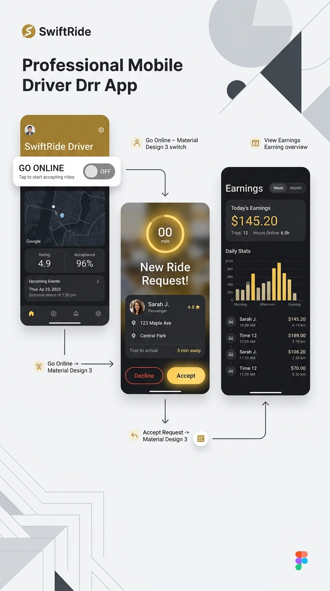

SwiftRide User Manual
Your Ultimate Guide to Seamless Transportation
1. Introduction
Welcome to SwiftRide, the next-generation ride-booking platform designed for efficiency, safety, and comfort. Whether you are a passenger looking for a reliable ride or a driver looking to maximize earnings, this manual will guide you through every feature of the app.
2. Passenger Guide
2.1 Getting Started
Download the SwiftRide app and sign up using your mobile number and email. Once registered, you can choose your preferred role from the home screen.
2.2 Booking a Ride
Follow these simple steps to get to your destination:

- Step 1: Set Destination: Enter your drop-off location to see available routes.
- Step 2: Choose Your Ride: Select from our premium fleet based on your needs.
- Step 3: Confirm & Track: Once matched, track your driver in real-time.
2.3 Real-Time Tracking
Once a driver accepts your request, you can track their location in real-time on the map. You will receive notifications when the driver is approaching and when they arrive at your pickup point.
2.4 Payments & Wallet
SwiftRide supports multiple payment methods:
- Cash: Pay the driver directly upon arrival.
- GCash: Integrated secure digital payment.
- SwiftRide Wallet: Top up your wallet for one-tap payments and exclusive rewards.
2.5 Safety Features
Your safety is our priority. Use the SOS Button in the active ride screen to immediately alert emergency services and share your live location with authorities.
3. Driver Guide
3.1 Registration & Verification
To become a SwiftRide partner, upload your Driver's License, Vehicle OR/CR, and NBI Clearance through the Profile > Documents section. Our team will review your application within 24-48 hours.
3.2 Going Online
Start your journey as a SwiftRide partner:

Toggle the status switch on the Home tab to Online. You will start receiving ride requests from passengers in your vicinity.
3.3 Accepting Rides
When a request appears, you have 24 seconds to review the pickup distance, destination, and estimated earnings. Tap Accept to secure the trip.
3.4 Earnings & Withdrawals
Track your daily, weekly, and monthly earnings in the Earnings tab. You can withdraw your balance directly to your GCash account at any time.
4. Support & FAQs
Need help? Contact our 24/7 Support Center through the app or email us at support@swiftride.com.